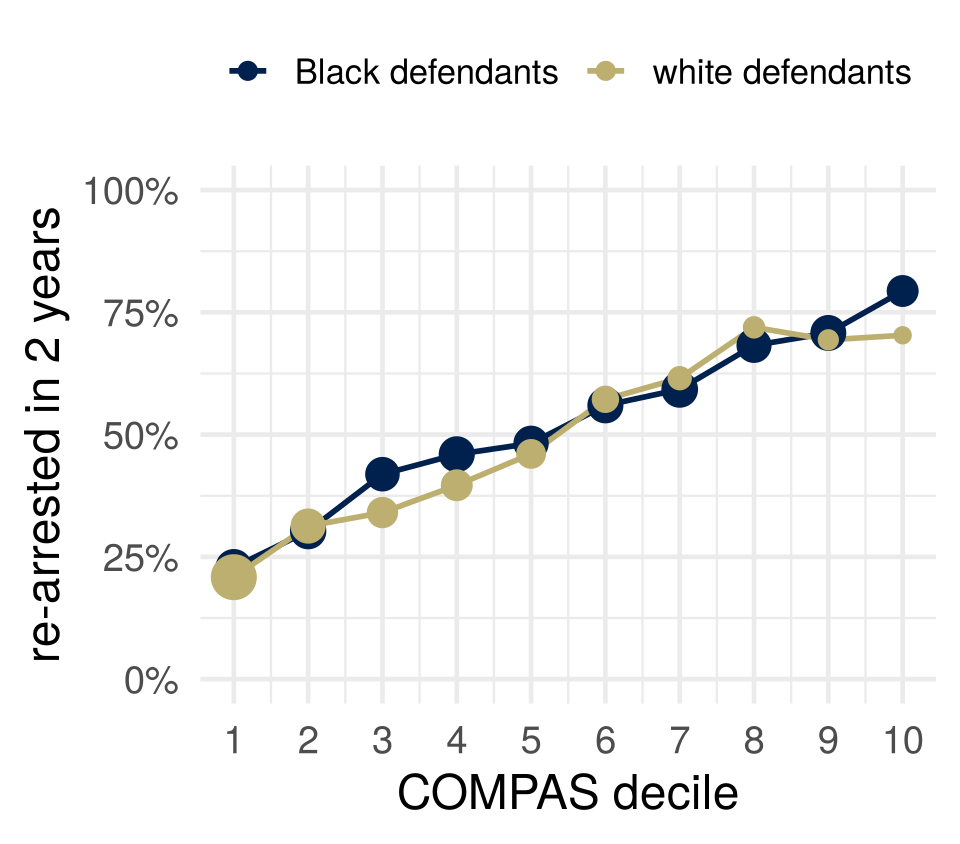
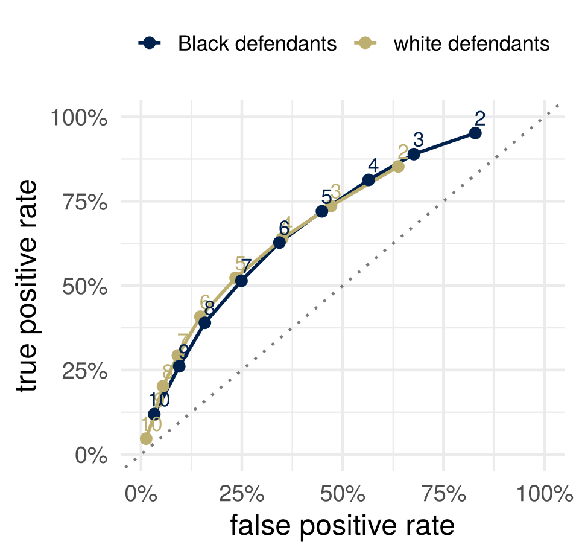

| flagged | not flagged | across the row | ||
|---|---|---|---|---|
| Black defendants | re-arrested | 1,369 | 532 | FNR 28% |
| not re-arrested | 805 | 990 | FPR 45% | |
| white defendants | re-arrested | 505 | 461 | FNR 48% |
| not re-arrested | 349 | 1,139 | FPR 23% |
Part 1: Scores that sort people
Part 2: An identity
Part 3: Three criteria
Part 4: Remedies and their costs
Part 5: What the table cannot show
For the rule you brought: who pays when it wrongly says yes? Who pays when it wrongly says no? Are they the same people?
An advertiser chooses who may see an ad. The platform then chooses who does see it, by predicting who is likely to click.
Ali and colleagues ran job ads on Facebook aimed at the same audience. Ads for jobs in the lumber industry reached an audience 72% white and 90% male; ads for supermarket cashiers, 85% female; ads for taxi companies, 75% Black.
In 2022 Meta settled a US Justice Department case over housing ads. It built a system to bring the audience that sees a housing ad closer to the eligible audience, by sex and by estimated race or ethnicity.
Ali, Sapiezynski, Bogen, Korolova, Mislove and Rieke (2019), “Discrimination through Optimization: How Facebook’s Ad Delivery Can Lead to Biased Outcomes,” Proceedings of the ACM on Human-Computer Interaction 3(CSCW), 1–30, doi:10.1145/3359301, page 2 of arXiv:1904.02095v5. US Department of Justice, United States v. Meta Platforms, Inc. (S.D.N.Y.), case page, https://www.justice.gov/crt/case/united-states-v-meta-platforms-inc-fka-facebook-inc-sdny, and US Attorney’s Office, S.D.N.Y., press release of 9 January 2023.
New universal credit claimants can request an advance. The Department for Work and Pensions scores each request; those scored high risk go to a caseworker, who is not told that the model sent them, and who approves or declines.
The department’s 2025 fairness assessment reports two numbers per group: the share of requests referred, and the share of referrals the caseworker declined.
Non-UK nationals, against UK nationals: referred 2.27 times as often; their referrals declined 0.97 times as often, not significantly different from 1.
The department judged it “reasonable and proportionate to continue operating the model,” and will retrain it.
Department for Work and Pensions (2025), “UC Advances Model: Fairness Assessment,” with its Statistical Annex (1 April 2024 to 31 March 2025), published 17 July 2025, https://www.gov.uk/government/publications/fairness-assessment-including-statistical-analysis-of-the-universal-credit-advances-machine-learning-model-1-april-2024-to-31-march-2025: paragraphs 10, 15 and 26 (pages 2 to 4 and 6) and Tables 3 and 4 (page 12).
COMPAS: a risk score from 137 questions, none of them about race, sold by Northpointe; a decile from 1 to 10. Broward County, Florida, used it in pretrial decisions. ProPublica (May 2016): the scores of more than 7,000 people assessed in 2013 and 2014, and whether each was arrested again within two years.
Convention: \(Y = 1\) is a new arrest within two years; \(\hat Y = 1\) is decile 5 or above, the county’s “medium” and “high”; \(A\) is race as recorded, Black or white.
\(1\) is the bad outcome and the flag. The book’s examples run the other way.
Angwin, Larson, Mattu and Kirchner (2016), “Machine Bias,” ProPublica, 23 May 2016, https://www.propublica.org/article/machine-bias-risk-assessments-in-criminal-sentencing; Larson, Mattu, Kirchner and Angwin (2016), “How We Analyzed the COMPAS Recidivism Algorithm,” ProPublica, 23 May 2016, https://www.propublica.org/article/how-we-analyzed-the-compas-recidivism-algorithm.
| flagged | not flagged | across the row | ||
|---|---|---|---|---|
| Black defendants | re-arrested | 1,369 | 532 | FNR 28% |
| not re-arrested | 805 | 990 | FPR 45% | |
| white defendants | re-arrested | 505 | 461 | FNR 48% |
| not re-arrested | 349 | 1,139 | FPR 23% |
Across a row, conditioning on the truth: \(\text{TPR} = P(\hat Y = 1 \mid Y = 1)\), \(\;\text{FNR} = 1 - \text{TPR}\), \(\;\text{FPR} = P(\hat Y = 1 \mid Y = 0)\).
Of those not re-arrested, 805 of 1,795 Black defendants had been flagged, against 349 of 1,488 white defendants.
A test rejects a true null with probability \(\alpha\) and misses a false one with probability \(\beta\). Which rates are these, with what as the null?
Counts: ProPublica’s compas-scores-two-years.csv (github.com/propublica/compas-analysis), 6,150 people recorded as African-American or Caucasian. Rates: Barocas, Hardt and Narayanan (2023), Tables 3.1 and 3.2, page 47.
| re-arrested, of those flagged | not re-arrested, of those not flagged | |
|---|---|---|
| Black defendants | 1,369 of 2,174: PPV 63% | 990 of 1,522: NPV 65% |
| white defendants | 505 of 854: PPV 59% | 1,139 of 1,600: NPV 71% |
Down a column, conditioning on the flag: \(\text{PPV} = P(Y = 1 \mid \hat Y = 1)\), \(\;\text{NPV} = P(Y = 0 \mid \hat Y = 0)\).
The replies: of those flagged, about the same share was re-arrested in both groups, and the same decile meant about the same re-arrest rate. ProPublica sorted people by what happened; the replies sorted them by what the score said.
The replies as summarized in Chouldechova (2017), “Fair Prediction with Disparate Impact: A Study of Bias in Recidivism Prediction Instruments,” Big Data 5(2), 153–163, doi:10.1089/big.2016.0047, section 1.
If the score has to treat Black and white defendants the same in one respect, which number would you want to be equal:
Then the fraud checks: a claimant who is not committing fraud, the caseworker, a taxpayer. One sentence each. Say why.
Two groups. In one, 51% are re-arrested; in the other, 39%.
Can one score have the same FPR, the same FNR, the same PPV and the same NPV in both groups?
One group, prevalence \(p = P(Y = 1)\), a flag \(\hat Y\) with rates FPR and FNR.
\[ P(\hat Y = 1) \;=\; p\,(1 - \text{FNR}) + (1 - p)\,\text{FPR} \]
\[ \text{PPV} \;=\; P(Y = 1 \mid \hat Y = 1) \;=\; \frac{p\,(1 - \text{FNR})}{p\,(1 - \text{FNR}) + (1 - p)\,\text{FPR}} \]
The numerator is the true positives, the denominator everyone flagged.
The significance filter: a share \(p\) of the hypotheses tested are true, tests have level \(\alpha\) and power \(1 - \beta\). The probability that a rejection is a true discovery is this formula with \(\alpha\) for FPR and \(\beta\) for FNR.
\[ \frac{1 - \text{PPV}}{\text{PPV}} \;=\; \frac{(1 - p)\,\text{FPR}}{p\,(1 - \text{FNR})} \]
\[ \text{FPR} \;=\; \frac{p}{1 - p}\cdot\frac{1 - \text{PPV}}{\text{PPV}}\cdot(1 - \text{FNR}) \]
Four quantities, one equation. Fix any three and the fourth is determined.
Chouldechova (2017), “Fair Prediction with Disparate Impact: A Study of Bias in Recidivism Prediction Instruments,” Big Data 5(2), 153–163, doi:10.1089/big.2016.0047, equation (2.6), section 2.3.
Solve the identity for FNR.
Two groups, \(a\) and \(b\), with prevalences \(p_a \neq p_b\). The flag has the same PPV in both and the same FNR in both. What is \(\text{FPR}_a / \text{FPR}_b\)?
Put in \(p_a = 0.514\) and \(p_b = 0.394\).
When two groups differ in prevalence, a flag with the same positive predictive value in both, strictly between \(0\) and \(1\), has a different false positive rate or a different false negative rate in the two groups.
With equal PPV and equal FNR, \(\text{FPR}_a / \text{FPR}_b\) would be the odds ratio, 1.63. The observed ratio is 1.91 \(=\) 1.63 \(\times\) 0.85 \(\times\) 1.38: the odds ratio, the ratio of \((1 - \text{PPV})/\text{PPV}\), and the ratio of TPRs.
The fraud checks: about the same PPV by nationality (0.97), and 2.27 times the referrals. With equal PPVs the two error rates could not both be equal as well: the prevalences would then be equal, and so would the share referred.
| the score \(R\) | the flag \(\hat Y\) | on the COMPAS table | |
|---|---|---|---|
| independence (demographic parity) | \(R \perp A\) | equal share flagged | fails: 59% against 35% |
| separation (error rate parity) | \(R \perp A \mid Y\) | equal FPR and equal FNR | fails, at every cutoff |
| sufficiency | \(Y \perp A \mid R\) | equal PPV and equal NPV | roughly: PPV 63% and 59% |
Predictive parity is equal PPV alone, a relaxation of sufficiency. Each criterion is a property of the joint distribution of \((A, R, Y)\): eight numbers, when all three are binary.
The housing-ad settlement asks for something like independence: the audience that sees an ad should match, by sex and estimated race or ethnicity, the audience that was eligible to see it.
Barocas, Hardt and Narayanan (2023), Fairness and Machine Learning: Limitations and Opportunities, MIT Press, https://fairmlbook.org, chapter 3, “Statistical non-discrimination criteria” through “Sufficiency,” pages 54 to 61.

Calibrated by group: \(P(Y = 1 \mid R = r, A = a) = r\) for every \(r\) and \(a\). It implies sufficiency, and a calibrated score cut at \(t\) need not give equal PPV.
The care-management score was well calibrated across races for its label, next year’s cost. At a given score, Black patients were sicker.
Barocas, Hardt and Narayanan (2023), chapter 3, “Calibration and sufficiency,” pages 61 to 63, and page 71. Obermeyer, Powers, Vogeli and Mullainathan (2019), “Dissecting racial bias in an algorithm used to manage the health of populations,” Science 366(6464), 447–453, doi:10.1126/science.aax2342, Figures 1A and 3A.
A score that gives everyone the population’s base rate is calibrated.
A score that is perfect in one group and gives the other group its base rate is calibrated by group.
Calibration checks that the score means what it says. It does not say the score is any good, or that it treats the groups alike.
Barocas, Hardt and Narayanan (2023), chapter 4, “Calibration,” pages 93 and 94.
For a flag. Independence with sufficiency holds only if \(Y \perp A\); independence with separation, only if \(Y \perp A\) or \(R \perp Y\) (\(Y\) binary). Separation with sufficiency: if \(Y\) depends on \(A\) and \(0 < \text{FPR} < 1\), a flag cannot have both.
For a score. (A) calibration within groups; (B) the negatives’ average score the same in both groups; (C) the positives’ likewise. Theorem 1.1: all three hold only if prediction is perfect (the features determine the outcome) or the base rates are equal. Theorem 1.2: approximately all three forces approximately one of the two.
Barocas, Hardt and Narayanan (2023), chapter 3, Propositions 2, 3 and 5, pages 65 to 67. Kleinberg, Mullainathan and Raghavan (2017), “Inherent Trade-Offs in the Fair Determination of Risk Scores,” 8th Innovations in Theoretical Computer Science Conference (ITCS 2017), LIPIcs 67, 43:1–43:23, doi:10.4230/LIPIcs.ITCS.2017.43, sections 1.1 and 1.2; theorem numbers as in the arXiv version (1609.05807v2), the one linked from the readings.
COMPAS’s 137 questions include none about race. That alone does not keep race out of a score.
Many features, each slightly correlated with group membership, predict it well together. In a large feature space the attribute is generally redundant: remove it, and a model that used it finds a redundant encoding in the other features.
The job ads: the same targeting for every ad, and audiences skewed by the ad’s content alone, through the platform’s estimate of who it was relevant to.
Barocas, Hardt and Narayanan (2023), chapter 3, “No fairness through unawareness,” pages 52 to 54. Ali and colleagues (2019), as above.
Kidney function is estimated (eGFR) from blood creatinine, age and sex. The US equation in use in 2021 also multiplied the estimate by 1.159 for Black patients, who in the studies behind it had higher average creatinine at the same measured function.
The US transplant network: this led to underestimating many Black patients’ kidney disease. Race-neutral estimates for transplant listing from July 2022; from January 2023, lost waiting time restored, to more than 6,100 Black candidates by July 2023, a median of 1.7 years.
Refitted without race, the creatinine equation’s median error is about 4 ml/min per 1.73 m² each way: too low for Black participants, too high for others.
Inker, Eneanya, Coresh and colleagues (2021), “New Creatinine- and Cystatin C–Based Equations to Estimate GFR without Race,” New England Journal of Medicine 385(19), 1737–1749, doi:10.1056/NEJMoa2102953, abstract and Table 2. OPTN, via HRSA (hrsa.gov): “OPTN Board Approves Elimination of Race-Based Calculation for Transplant Candidate Listing,” 28 June 2022; “Early Monitoring Report Shows Black Kidney Candidates Are Receiving Waiting Time Modifications After Implementation of New Policies,” 4 December 2023.

No single cutoff (the number by each point) gives the two groups the same error rates. A cutoff per group, 6 and 4, nearly does, and then the same score means different treatment.
Elsewhere: the reading’s credit-score case study (pages 67 to 71); a contextual offer, one or two grades below the standard offer.
LSE, “Contextual admissions and offers,” https://www.lse.ac.uk/study-at-lse/undergraduate/prospective-students/how-to-apply/contextual-admissions-and-offers.
\(Y = 1\) means a new arrest in Broward County’s records within two years. What we want to know about is reoffending, \(Y^*\). Nobody observes it.
In the fraud checks, a referral counts as correct when the caseworker declines the advance. That outcome is recorded only for requests that were referred, or sampled at random.
Name one way the gap between being arrested and reoffending could differ between the two groups. Which of the four numbers does it move, and which way?
Every rate so far, the base rates included, is a rate of the proxy.
| view | the rule | the criterion the book ties to it |
|---|---|---|
| narrow | treat similar people similarly, as they are now | calibration by group: the same score means the same thing in every group |
| middle | treat seemingly dissimilar people similarly when the dissimilarity has causes we should discount | error rate parity, in part: one group should not bear more of the mistakes |
| broad | organize society so that equal ability and ambition reach equal outcomes | demographic parity, loosely: equal shares, at the decision |
The book ties error rate parity to both the middle and the narrow view. ProPublica’s error rates are mostly a middle-view complaint; the predictive values, a narrow-view defense.
Barocas, Hardt and Narayanan (2023), chapter 4, “Equality of opportunity,” pages 81 to 85, and “Connecting statistical and moral notions of fairness,” pages 92 to 97.
Equal predictive value or equal error rates: the two cannot both hold. Which would you require, and which would you give up? Who do you owe the explanation to?
Who pays for your choice: which group, and which error?
A test for a disease has sensitivity \(0.9\) and specificity \(0.9\) (TPR \(0.9\), FPR \(0.1\)) in both of two regions. The disease affects \(2\%\) of people in the first region and \(10\%\) in the second.
Every criterion in this lecture is a property of the joint distribution of the features, the group, the score and the outcome. With binary \(A\), \(\hat Y\) and \(Y\): eight numbers.
“What observational definitions hide are the mechanisms that created an observed disparity” (the reading, page 72). One table can come from a decision maker who considers group membership out of spite, or from an inequality in society that gives one group an advantage.
For re-arrest, or for the fraud checks: describe two worlds that would give the same table, one where the disparity is the decision maker’s doing and one where it is not.
Barocas, Hardt and Narayanan (2023), chapter 3, “Inherent limitations of observational criteria,” pages 71 to 73.
…and why?
COMPAS is a commercial product. “Equally accurate in both groups” was the vendor’s headline, and in the sense it meant, equal predictive value, the number is about right.
Who benefited from that being the number that was reported? And would a more competent analyst have chosen a different one?
For next time: bring one decision in which an attribute is used, or deliberately not used, with one route by which it could affect the outcome, and whether that route is fair.